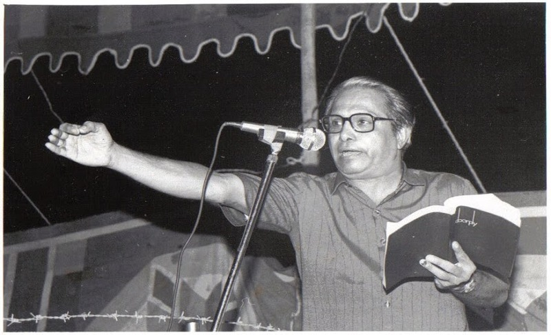
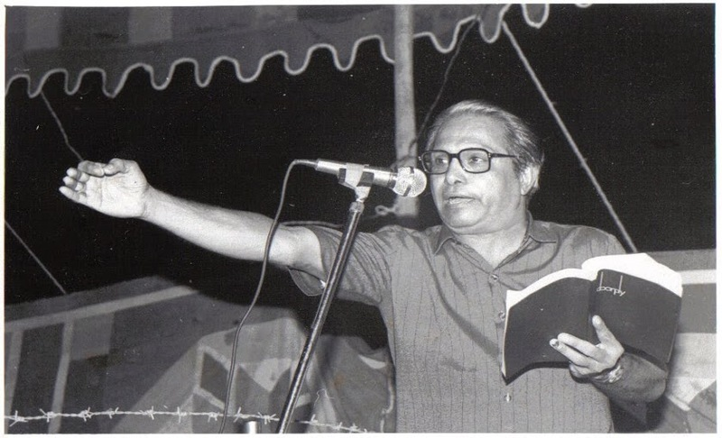

एक नि:श्वास तुझा रे । वेद जाहला जगात लक्ष उसासे आमुचे । घरोघरी कुजतात असा आपल्या वेदनेचा हुंकार देत प्रा. लक्ष्मीकांत तांबोळींनी साहित्य प्रांतात आपले पहिले पाऊल टाकले. शके 1881 च्या चैत्रशुद्ध प्रतिपदेच्या दिवशी त्यांच्या काव्याची गुढी उभारली गेली. कथाकार व कादंबरीकार, समीक्षक, वक्ते म्हणूनही मराठी साहित्यविश्वात त्यांचा दबदबा असला तरी सहृदय कवी म्हणूनच त्यांची सर्वाधिक ख्याती आहे. जे अनुभवले ते कवितेत उत्स्फूर्तपणे प्रतिबिंबित व्हावे, अशा संवेदनशीलतेची अपेक्षा बाळगणारा हा कवी ‘डोळे पाणीया भरावे’ असे जे म्हणतो ते यामुळेच! ‘अस्वस्थ सूर्यास्त’ हा त्यांचा गाजलेला कवितासंग्रह. यातील कवितांतून त्यांच्या चिंतनशीलतेचा प्रत्यय येतो. समाजाशी असलेले अतूट नाते व त्यातील गुंतागुंतीचे पदर ज्या हळुवारपणे उलगडतात त्याला तोड नाही. उपहास, तुच्छता, वैताग तर जीवनात भरून राहिलाच आहे आणि आहार, निद्रा-भय-मैथुन या पलीकडे जीवनात काहीच नाही, अशी जाणीव बलवत्तर झाली. ‘मी धात्री, मी धरित्री’मध्ये ते अगदी सहज अभिव्यक्त होतात. काव्यनिर्मितीत महत्त्वाचे मानले जाणारे अल्पाक्षरत्व व तत्त्वभारत्व या दोन घटकांचा प्रभाव यात दिसतो. शिवाय त्यांची कविता उत्तरोत्तर सुंदर, प्रगल्भ व परिपक्व होत जाते याचाही प्रत्यय रसिकांना येत राहतो. त्यांनी संकुचिततेच्या मर्यादा उल्लंघून व्यापक आणि सखोल अशा जीवनानुभवाचा वेध कवितांच्या माध्यमातून घेतला. त्यात एक आंतरिक लय आहे. एक तात्त्विक विचार व पुरोगामी आशावाद घेऊन त्यांची कविता जशी वाचकांसमोर येते. तसेच जोरकस विचार व अभिव्यक्तीची अभिजातता यांचा सुरेख संगम साधण्याची ताकद केवळ त्यांच्यातच आहे याचा प्रत्ययदेखील येतो. जगणं खरं केल्याशिवाय कविता लिहिणे बरं नव्हे, असं त्यांचं कवी मन मानतं आणि इतरांनाही ते पटवून देतात. त्यामुळेच प्रा. तांबोळी यांचा उल्लेख ‘अल्ट्रा मॉडर्न पोएट’ म्हणूनही केला जातो.प्रा. लक्ष्मीकांत तांबोळी हे असे मनस्वी लेखक आहेत की, त्यांना कुठलेही लेबल लावता येत नाही. कारण सतत नावीन्याचा ध्यास जसा त्यांना असतो, तसेच नव्या पद्धतीने जीवनानुभव अभिव्यक्त करण्याच्या मन:स्थितीत असतात. एक नाटकाचा अपवाद सोडला (खरं तर त्यांनी लिहायला हवं) तर साहित्याच्या सर्व प्रांतांत त्यांनी कसदार निर्मिती केली आहे. 70च्या दशकात त्यांनी कथालेखनही केले. ‘तवंग’ व ‘सलामसाब’ हे प्रसिद्ध कथासंग्रह असून बहुसंख्य कथा तृतीयपुरुषी निवेदनातून येतात. ‘सलामसाब’ हा कथासंग्रह वेगळ्याच धाटणीचा आहे. बी. रघुनाथांनंतर मराठवाड्यात काम भावनेवर लक्ष्मीकांत तांबोळी यांनीच सविस्तर लिहिले, असे म्हटले तर अतिशयोक्ती ठरू नये. जीवनातील हा भाग कलाकृती म्हणून मांडला. साहित्याकडे केवळ सोवळ्याच्या दृष्टीने बघण्यात अर्थ नसतो. जीवनात जशी गंगा असते, तसेच गटारही असते. ते वाचकांच्या समोर आणण्याचा त्यांनी प्रयत्न केला. आंध्र-कर्नाटक-महाराष्ट्र सीमेवरील देगलूरसारख्या आडवळणाच्या गावी राहूनही त्यांनी आपली रसिकता जोपासली. देगलूर महाविद्यालयात प्राध्यापक व नंतर प्राचार्य म्हणून त्यांची कारकीर्द यशस्वी राहिली. एक आदर्श शिक्षक, विद्यार्थीप्रिय प्राध्यापक तांबोळी सर्वांना परिचित आहेत. शिकवण्याचा त्यांचा हातखंडा होता. विशेषत: कविता कशी शिकवावी, किंबहुना ती विद्यार्थ्यांच्या गळी कशी उतरवावी, त्यातील अनुभवाशी विद्यार्थ्यांना कसे भिडवावे हे कौशल्य खास त्यांचेच ठरावे. कविता कशी शिकवावी याचा वस्तुपाठ तांबोळी यांच्याकडूनच घ्यावा, असा गौरवही समीक्षक वा. ल. कुलकर्णी यांनी केला आहे. मराठवाड्याचा त्यांना विलक्षण अभिमान आहे. त्यांच्या कथा-कादंब-यांत मराठवाडा पानोपानी उठून दिसतो. ‘दूर गेलेले घर’ ही कादंबरी तर मराठवाड्याचा दस्तऐवज ठरावी अशीच आहे. तत्कालीन मराठवाड्याचे सर्वांगीण दर्शन त्यात होते. ‘कृृष्णकमळ’ कादंबरीतही हे जाणवते. (या कादंबरीवर ‘बंदिवान मी या संसारी’ नावाचा चित्रपट निघाला आहे.) फार पूर्वी प्रा. तांबोळींनी ‘ललित’मध्ये लिहिले होते की, सामताप्रसादांची बोटे जशी तबल्यावर नर्तन करतात, तशी माझी लेखणी कागदावर नाचावी. त्यांची ही इच्छा सफल, संपूर्ण झाली हे आज दिसून येते. त्यांनीच एका कवितेत म्हटल्याप्रमाणे त्यांचे साहित्य व त्यांचे जीवनही उंच उंच वाढता वाढता, खोल खोल रुजणारे आहे. इंग्रजी, गुजराती, हिंदी भाषेत त्यांच्या कविता पोहोचल्या. ‘मराठवाडा गीत’ जिल्ह्याच्या ठिकाणी शिल्पांकित झाले. -दीपक कासराळीकर (लेखकाने प्रा. लक्ष्मीकांत तांबोळी यांच्या साहित्यावर पीएच. डी.संपादन केली आहे.)